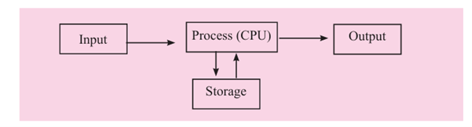

1.1 Introduction to Computer Systems
1.1 Introduction to Computer Systems
Welcome to the exciting world of computer systems! In this lesson, we'll explore what makes computers so powerful and how they've become an essential part of our daily lives.
Learning Objectives
- Understand what a computer system is and its key features
- Explore various application areas of computer systems
- Learn about the IPOS cycle and its components
1.1.1 Definition and Features of Computer System
The word “Computer” comes from the Latin word Computare, which means “to calculate.” In the past, computers were mainly used for calculation, but today they are everywhere—at home, in schools, offices, hospitals, banks, and many other places.What is a Computer?
A computer is an electronic programmable device that accepts raw data(input) from the user, processes it according to a given set of instructions(software/program), stores the data and information for future use and produces meaningful information (output).
Features of a Computer
Computers are powerful and useful in almost every field. Their importance is increasing with time. The main features of computers are:
1. Automatic
A computer works automatically once instructions are given through software. It can also automatically control other devices connected to it. Example: Printing 1000 pages without monitoring.
2. Speed
A computer works with electrical signals (0 and 1 in binary form). These signals travel close to the speed of light, so computers can process millions of instructions in one second. For example, weather forecasting calculations that would take humans hours are done in minutes by a computer. The table below shows the speed of the computer in different units of time.
| Unit of Time | Part of second | Power of 10 |
|---|---|---|
| Millisecond | 1/1000 | One Thousand (10-3) |
| Microsecond | 1/1000000 | One Millionth (10-6) |
| Nanosecond | 1/1000000000 | One Billionth (10-9) |
| Picosecond | 1/1000000000000 | One Trillionth (10-12) |
| Femtosecond | 1/1000000000000000 | One Quadrillionth (10-15) |
3. Accuracy
A computer gives accurate results if correct input and instructions are provided. However:
- The incorrect output produced due to incorrect input is referred to as Garbage In Garbage Out (GIGO).
- Errors due to hardware or software faults are called bugs.
4. Storage
A computer can store large amounts of data, information, and programs on storage devices (hard disks, CDs, pen drives, etc.). Stored data can be used anytime. 1 Byte = 1 character.
| 1 Bit = 1 or 0 | 4 bits = 1 Nibble | 8 bits = 1 Byte | 1024 bytes = 1 KB |
| 1024 KB = 1 MB | 1024 MB = 1 GB | 1024 GB = 1 TB | 1024 TB = 1 PB |
| 1024 PB = 1 EB | 1024 EB = 1 ZB | 1024 ZB = 1 YB |
KB-Kilobyte, MB-Megabyte, GB-Gigabyte, TB-Terabyte, PB-Petabyte, EB-Exabyte, ZB-Zettabyte, YB-Yottabyte
5. Diligence
A computer does not get tired or bored. It can work for long hours with the same speed and accuracy. The capability of a computer to perform a task repeatedly without losing speed and accuracy for a long time is known as diligence.
6. Versatility
A computer is a versatile (multi-purpose) machine. Versatility refers to the capability of doing various kinds of tasks. It can be used for calculations, preparing documents, designing and research, entertainment (games, music, videos) and communication (emails, messages, file sharing).
Real World Example
Think of a smartphone - it's a complete computer system. It has hardware (screen, processor, memory) and software (apps, operating system) working together. You can take photos, send messages, browse the internet, and play games - all thanks to its versatile computer system!
1.1.2 Application Areas of Computer Systems
Computers are very powerful and versatile. They help people work faster, correctly, and more efficiently. With computers, people can prepare documents, spreadsheets, presentations, and graphics. They can also enjoy modern facilities like instant messaging, video chatting, email, online shopping, ticket booking, banking, and getting the latest news. Today, computers are used in almost every field of life. Some important applications are:
Education
- Computers are widely used in the education sector for both teaching and learning.
- Students can study different subjects through educational websites and online resources.
- Teachers prepare lesson materials, presentations, and multimedia content with the help of computers.
- Schools use computers to maintain student records, prepare bills, and manage exam results efficiently.
Communication
- Computers play a vital role in sharing information through the Internet.
- They enable services like email, video calls, instant messaging, and social media platforms (e.g., Facebook, Twitter, Instagram) to keep people connected worldwide.
Banking
- Computers are used in banks to keep customer records and prepare bank statements.
- People can use online and mobile banking to check balance, transfer money, or pay bills easily.
- Computers also make banking safer and faster by reducing paperwork.
Medicine
- Computers are used in hospitals to diagnose diseases with machines like CT scans, ultrasound, and ECG.
- Hospitals use computers to manage patient records and track medicines.
- Computers are also used in surgeries and in medical research to discover new treatments.
Entertainment
- Computers are used for entertainment like playing games, listening to music, watching movies, and browsing the Internet.
- Streaming apps like Netflix and Spotify give access to movies and songs through computers and the Internet.
- Computers let people use social media to talk with others around the world, and they can also be used to make digital drawings and designs.
Scientific Research
- Computers are essential in all forms of scientific study. Scientists use the Internet to get the latest information from around the world.
- Computers are used in weather forecasting, space research, and other complex studies.
- Computers help researchers analyze large amounts of data and run computer experiments (simulations) to understand things better.
Agriculture
- Computers make farming more accurate, save time, reduce waste, and increase crop production.
- Farmers use GPS (Global Positioning System) to find the best areas for planting crops.
- Drones (small flying machines with cameras) are used to check fields, monitor plant health, and spray fertilizers or pesticides.
- AI (Artificial Intelligence) helps farmers predict weather, decide when to plant, and how much water or fertilizer to use.
1.1.3 Functions of a Computer System: The IPOS Cycle
A computer works step by step to change raw data into useful information. This process is called the IPOS Cycle: Input → Process → Output → Storage.
The block diagram of the IPOS cycle of the computer system as:
1. Input
Data is entered into the computer using input devices (keyboard, mouse, scanner, etc.).
2. Process
The Central Processing Unit (CPU) processes the entered data according to instructions.
3. Output
The processed information is displayed or given to the user through output devices (monitor, printer, speaker, etc.).
4. Storage
The data and information can be saved in the computer's memory (hard disk, pen drive, etc.) for future use.
Real World Example: Smartphone Camera
Let's see how the IPOS cycle works when you take a photo with your smartphone:
- Input: Light enters through the camera lens when you press the capture button.
- Process: The image processor adjusts settings like brightness, contrast, and focus.
- Output: The processed image is displayed on your screen.
- Storage: The photo is saved to your phone's memory or cloud storage.